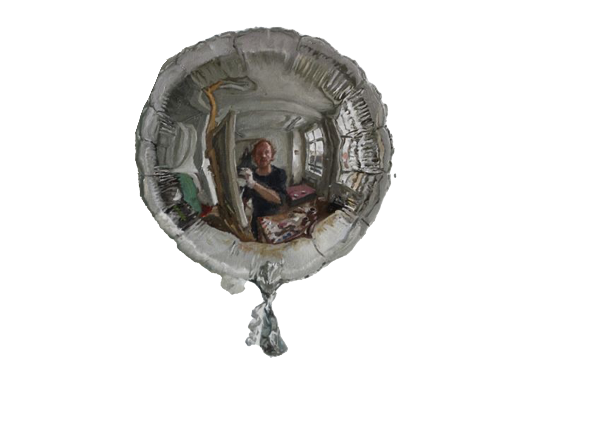

People often say "take a good look in the mirror" when implying a need for self-evaluation.
Mirrors are powerful.
Looking into them we can observe our physicality. This act is the only time we an view ourelves in present time allowing perception of our current selves to elicit deeper contemplation. Who am I under my bodily composition?
